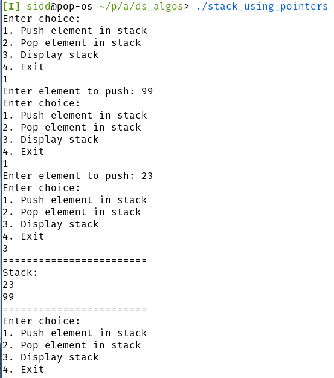

Aim: Sort elements of an array using the Bubble Sort algorithm.
#include <stdio.h> void swap(int *a, int *b) { int temp = *a; *a = *b; *b = temp; } int main() { int arr[] = {1,6,3,9,2,0}; int size = sizeof(arr) / sizeof(int); printf("Unsorted: "); for (int i = 0; i < size; i++) { printf("%d ", arr[i]); } printf("\n"); for (int pass = 0; pass < (size); pass++) { for (int j = 0; j < (size - 1 - pass); j++) { if (arr[j] > arr[j + 1]) { swap(&arr[j], &arr[j + 1]); } } } printf("Sorted: "); for (int i = 0; i < (size); i++) { printf("%d ", arr[i]); } }
Unsorted: 1 6 3 9 2 0 Sorted: 0 1 2 3 6 9
Aim: Sort elements of an array using the Insertion Sort algorithm.
#include <stdio.h> void insertion_sort(int *arr, int size) { for (int i = 1; i < size; ++i) { int value = arr[i]; int hole = i; while (hole > 0 && (arr[hole - 1] > value)) { arr[hole] = arr[hole - 1]; hole = hole - 1; } arr[hole] = value; } } int main() { int arr[] = {6, 9, 7, 3, 5, 10, 9}; int size = sizeof(arr) / sizeof(int); printf("Unsorted: "); for (int i = 0; i < size; i++) { printf("%d ", arr[i]); } printf("\n"); insertion_sort(arr, size); printf("Sorted: "); for (int i = 0; i < size; i++) { printf("%d ", arr[i]); } printf("\n"); }
Unsorted: 6 9 7 3 5 10 9 Sorted: 3 5 6 7 9 9 10
Aim: Implement Stack using Arrays.
#include<stdio.h> #include<stdbool.h> #include<stdlib.h> int push(int *stack, int *top, int n, int el) { if (*top == n) { // overflow return -1; } *top = *top + 1; stack[*top] = el; return 0; } int pop(int *stack, int *top) { if (*top < 0) { // underflow return -1; } int el = stack[*top]; *top = *top - 1; return el; } void display(int *stack, int top) { printf("========================\n"); printf("Stack: \n"); while(top >= 0) { printf("%d\n", stack[top]); top--; } printf("========================\n"); } int main() { int top = -1; int n = 100; int stack[n]; while(true) { printf("Enter choice: \n"); printf("1. Push element in stack\n"); printf("2. Pop element in stack\n"); printf("3. Display stack\n"); printf("4. Exit\n"); int option; scanf("%d", &option); switch(option) { case 1: { int el; printf("Enter element to push: "); scanf("%d", &el); int st = push(stack, &top, n, el); if (st == -1) { printf("failed to push element in stack (overflow)\n"); } break; } case 2: { int st = pop(stack, &top); if (st == -1) { printf("failed to pop element from stack (underflow)\n"); } break; } case 3: display(stack, top); break; case 4: exit(0); break; default: exit(0); break; } } }
